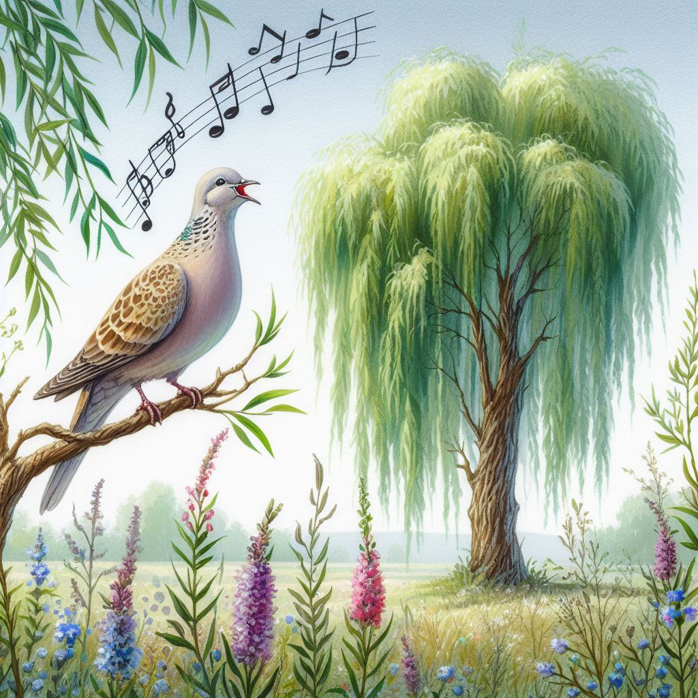

Theme of Songs
Published on 2024-05-24

Songs
The Seven Pillars utter too much about songs and singing for all to be said here. One idea stands out. There are songs for times of sorrow and songs to sing at harvest time and the wise can tell which kind to sing now – or know to remain silent. Of the seven categories of clue, this seemed the weakest line of reasoning and I even tried to find an alternative category to take its place. Shows what I know. I learned that Jesus quoted the Psalms more than any other Old Testament book. The Lord did not underrate the Psalms – he exalted them. Why is that?
Songs in Psalms
The Psalms hold center stage in our worship rituals. The spirit of Understanding is found as much in Psalms as in Proverbs. How is that? Proverbs speaks of understanding but Psalms shows it. Something occurred to me this morning. I already knew that in worship, we come to understand God, as His glory shines upon us and we are transformed, having His goodness imprinted upon us. Now I know that in worshiping God, something else happens. I discover that God understands me. How many times have I turned to the Psalms for help, with anxieties, nightmares, fears and longings? In those pages I found a God who knows me and loves me. He understands me. From that understanding He can console and heal me. Understanding corresponds to the planting phase of the harvest, to the Son of God. He became mortal like us. He suffered and died like us. He understands.
Psalm 126 speaks of suffering and reaping a harvest. It combines both types of song. Others fall more on one side or the other. Psalm 68 is one of the thunder Psalms, connecting us to that theme, while Psalm 77 has an echo of Elihu’s words in Job:
A father to the fatherless, a defender of widows,
is God in his holy dwelling.
God sets the lonely in families,
he leads out the prisoners with singing;
but the rebellious live in a sun-scorched land.
- Psalm 68:5-6, NIV
I remembered my songs in the night.
My heart meditated and my spirit asked:
“Will the Lord reject forever?
Will he never show his favor again?”
- Psalm 77:6-7
Songs in Job
Elihu tells us how the songs that God gives us in times of trouble make us wise, marking songs as a key delivery mechanism for God’s wisdom.
“People cry out under a load of oppression;
they plead for relief from the arm of the powerful.
But no one says, ‘Where is God my Maker,
who gives songs in the night,
who teaches us more than he teaches the beasts of the earth
and makes us wiser than the birds in the sky?’
- Job 35:9-11
The preceding verse is what made Job precious to me when I was struggling with depression in college. I used to sing songs in my dorm room at night, to keep from crying myself to sleep. When I found these words in the Bible, I realized it was God who gave me those songs. It was God who helped me endure those years of despair. Elihu's words are not pretty poetry. Songs in the night are powerful. If you choose those songs instead of abject surrender, they will make you wise.
The blessing of him who was about to perish came upon me,
and I caused the widow's heart to sing for joy.
- Job 29:13
In my life, the words of Job 29:13 were flipped around. I visited Janet Sullivan, a widow who was about to perish. I prayed for her, read to her from Scripture, and mourned with her friends at her funeral. Yet it was I who sang for joy. God rewarded my small act of kindness by causing the Holy Spirit to pour out of her and into me. A half hour after my first visit to Janet's sickbed, after the tears from seeing her in such pain stopped, I was filled with the joy of the spirit; that joy remained for a week. A decade of depression was suddenly over and I was free.
If there be for him an angel, a mediator, one of the thousand,
to declare to man what is right for him, and he is merciful to him,
and says,
‘Deliver him from going down into the pit;
I have found a ransom;
let his flesh become fresh with youth;
let him return to the days of his youthful vigor’;
then man prays to God,
and he accepts him;
he sees his face with a shout of joy,
and he restores to man his righteousness.
He sings before men and says:
‘I sinned and perverted what was right,
and it was not repaid to me.
He has redeemed my soul from going down into the pit,
and my life shall look upon the light.’
- Job 33:23-28
For years, I longed to write songs. After the Lord ransomed me, I was able to do that. My songs are not the best songs ever written, but they are songs written by someone who once had nothing good to sing about.
“Where were you when I laid the foundation of the earth?
Tell me, if you have understanding.
Who determined its measurements—surely you know!
Or who stretched the line upon it?
On what were its bases sunk,
or who laid its cornerstone,
when the morning stars sang together
and all the sons of God shouted for joy?
- Job 38:4-7
People are rescued from oppression, poverty and sin and a great harvest – the creation of the world – springs up from the songs of angels. These beautiful words are too beautiful. Their glory hides the truth in its rays. Who, like, has not read these words as a rebuke to Job? They are, but they are more. Where was Job when God laid the foundations of the earth? Let us consider what we know.
- The Bible is the Word of God.
- Jesus is the Word of God.
- Jesus is eternal.
- Job was the first book of the Bible to be written.
That is all we need to know. I do not know if souls preexist our conception. I do know that as God was laying the foundation of the earth, his thoughts were also on all who would one day live upon it. God was thinking of Job. Job already had an important place in God's heart way back at the beginning. The angels were not just singing about planets and stars and light. They were delighting in mankind as it says in Proverbs. God's love for us was a reality even back then.
Where was Job? Where were you? Where was I? We were lyrics in the love songs of angels. We were already in God's heart. That's what the songs in Job tell us.
Songs in Proverbs
This book contains several songs, such as chapter 8, a hymn to wisdom. However, it is pointed in its advice, saying, “Whoever sings songs to a heavy heart is like one who takes off a garment on a cold day, and like vinegar on soda.” (Proverbs 25:20) There is a time to sing and a time for silence.
Songs in Song of Songs
The whole book is one big song. However, two parts stand out. The first is the sole use of the word “singing”:
The flowers appear on the earth,
the time of singing has come,
and the voice of the turtledove
is heard in our land.
- Song of Songs 2:12
That passage is found in the second of the seven quartets of the song, corresponding to the spirit of wisdom. As beautiful as spring may be, it can also be a time of plowing. The second passage is a song within the song:
“Who is this who looks down like the dawn,
beautiful as the moon, bright as the sun,
awesome as an army with banners?”
- Song of Songs 6:10
The second passage occurs in the sixth part, corresponding to the spirit of knowledge and the time of the harvest. By emphasizing the song within the song at two places, this points to the treasures of wisdom and knowledge singled out by Paul in Colossians as residing in Christ. This emphasis on the second and sixth spirits is subtle here. It will be clearer when we get to the treasures.
Songs in Ecclesiastes
This book takes a dim view of songs, saying “It is better for a man to hear the rebuke of the wise than to hear the song of fools.” (Ecclesiastes 7:5) Not only is there a right and wrong time to sing songs, but right and wrong singers to listen to. Most pop singers are fools. If you live your life according to their lyrics, you will suffer.
Songs in Matthew
The Book of Psalms is quoted by Jesus in Matthew. However, the two references to singing that stand out to me address the question of knowing the proper time to sing and the proper songs to be sung.
“‘We played the flute for you, and you did not dance;
we sang a dirge, and you did not mourn.’
For John came neither eating nor drinking, and they say,
‘He has a demon.’
The Son of Man came eating and drinking, and they say,
‘Look at him! A glutton and a drunkard,
a friend of tax collectors and sinners!’
Yet wisdom is justified by her deeds.”
- Matthew 11:17-19
And when they had sung a hymn,
they went out to the Mount of Olives.
- Matthew 26:30 ESV
The first passage speaks of how the faithful will often be out of step with the world. We sing different songs at different times. The proof of our ear for celestial music is in our deeds.
The second passage poses a riddle. After leaving the Last Supper, what hymn did Jesus and his disciples sing? On Passover, Jews would likely recite or sing Psalm 118. Since Psalm 118 is quoted four times in Mark, it is considered an important Messianic psalm. It includes these words (which are quoted in the Gospels):
The stone that the builders rejected
has become the cornerstone.
This is the LORD's doing;
it is marvelous in our eyes.
- Psalm 118:22-23
Exodus and the rest of the Pentateuch are the floor and the books of wisdom its pillars, but Jesus himself is its precious cornerstone. All the parts of the building derive their strength and stability from this large stone carefully laid. That is worth singing about.
Songs in Revelation
Revelation is full of singing. In “Aftertaste: Donner & Blitzen” we observed that hymns appear at every critical juncture. The strains of praise arise in each of the seven sections demarcated by thunder. What is not obvious is the connection between those thunderings and the Psalms.
- There are seven Psalms of Thunder: 18, 29, 68, 77, 81, 93 & 104.
- There are seven sections in Revelation (excluding chapter 10) that conclude with thunder: 4:5, 6:1, 8:5, 11:19, 14:2, 16:18, 19:6.
Each psalm that mentions thunder has phrasing and imagery that matches one section of Revelation. If each psalm matches exactly one section of Revelation but those psalms were arranged randomly in the Psalter, what would the chance be that if you ordered the psalms according to their matching parts of Revelation they would appear in ascending order? The answer for seven psalms is seven factorial, notated as:
7! = 1x2x3x4x5x6x7 = 5040
That number is large enough that the most logical conclusion is that the ordering was intentional. That means the connection between the Psalms and Revelation is tight and intentional. Here is the concordance between these Psalms and Revelation, where the Thunder Verse ends the section in Revelation:
| Psalm Verses | Revelation Verses | Thunder Verse |
|---|---|---|
|
18:4 18:9-10 |
1:17-18 1:7 |
Rev 4:5 |
|
29:1-2 29:4 |
4:8 4:11 |
Rev 6:1 |
|
68:11-12 68:19-20 |
6:15 7:10 |
Rev 8:5 |
| 77:11-12 | 11:5-6 | Rev 11:19 |
| 81:8-9 | 13:4,8,12 | Rev 14:2 |
| 93:2-5 | 14:2,3,6 | Rev 16:18 |
|
104:5 104:10-11 104:25-26 |
16:18-20 21:6 18:17-18; 19:20 |
Rev 19:6 |
Psalm 104 versus the Seventh Section in Revelation
Peace, like Solomon Never Knew analyzes the correspondences between Revelation and all seven psalms in the table above. Here we shall just tackle Psalm 104.
Shaking the Foundations. Psalms 104:5 says, "He set the earth on its foundations; it can never be moved." Are those foundations so steady that even God cannot move them? That would be a paradox! Revelation 16 gives us the answer. It describes the effects of a great earthquake caused by "the fury of God's wrath", saying "Every island fled away and the mountains could not be found." No, God did not create a planet so big he couldn't move it.
Satisfying the Thirsty. Psalm 104 shows the love of God by how he provides water to drink for the animals he created:
He makes springs pour water into the ravines;
it flows between the mountains.
They give water to all the beasts of the field;
the wild donkeys quench their thirst.
- Psalm 104:10-11
Then Revelation shows God's love, not for the beasts of the field, but for his children:
He said to me:
“It is done. I am the Alpha and the Omega, the
Beginning and the End. To the thirsty I will
give water without cost from the spring of the water of life.
- Revelation 21:6
Of Ships and Sea Monsters. All doubts about the closeness of the connections between Psalms and Revelation vanish when you see this final comparison. Leviathan has long been associated with the Beast of the Sea, Satan's final beast. See how well Psalm and Prophecy align:
There is the sea, vast and spacious,
teeming with creatures beyond number—
living things both large and small.
There the ships go to and fro,
and Leviathan, which you formed to frolic there.
- Psalm 104:25-26
In Revelation, the linkage is divided in two chapters:
'In one hour such great wealth has been brought to ruin!’
“Every sea captain, and all who travel by ship, the sailors, and
all who earn their living from the sea, will stand far off.
When they see the smoke of her burning, they will exclaim,
‘Was there ever a city like this great city?’
- Revelation 18:17-18
But the beast was captured, and with it the false prophet
who had performed the signs on its behalf. With these signs
he had deluded those who had received the mark of the beast
and worshiped its image. The two of them were thrown alive
into the fiery lake of burning sulfur.
- Revelation 19:20, NIV
How incongruous that Psalms describes the scene so pacifically, while Revelation speaks of terrifying judgment. There is a divine perspective on things so foreign to our way of thinking that we cannot comprehend it.
Ransom and Treasure
And they sang a new song, saying,
“Worthy are you to take the scroll and to open its seals,
for you were slain, and by your blood
you ransomed people for God
from every tribe and language and people and nation”
- Revelation 5:9 ESV
The above song connects songs to two of the other categories. The scroll represents the books of the Bible and the blood ransom is the treasure.
And I heard a voice from heaven like the roar of many waters and
like the sound of loud thunder. The voice I heard was like the sound
of harpists playing on their harps, and they were
singing a new song before the throne and before the
four living creatures and before the elders. No one could learn
that song except the 144,000 who had been redeemed from the earth.
- Revelation 14:2-3
This second song connects us to thunder and again to treasure, because after the 144,000 are redeemed, they are the treasure on account of the price that was paid.
And I saw what appeared to be a sea of glass mingled with fire—and
also those who had conquered the beast and its image and the
number of its name, standing beside the sea of glass with
harps of God in their hands. And they sing the song of Moses,
the servant of God, and the song of the Lamb, saying,
“Great and amazing are your deeds,
O Lord God the Almighty!
Just and true are your ways,
O King of the nations!
Who will not fear, O Lord,
and glorify your name?
For you alone are holy.
All nations will come and worship you,
for your righteous acts have been revealed.”
- Revelation 15:2-6
This third song connects us to Moses and the spirit of the Fear of the Lord. It also describes enigmatic instruments: the harps of God. Many people mock John’s vision. In cartoonish images they seat the faithful upon clouds with harps and ridicule this heavenly occupation as empty. Others with noble intent have tried to speak of the harps of God, to describe something of their nature and excellence. I have no knowledge of what these harps may be like except that they are God’s. If God has made them and reserved their introduction for the time of the end, they must be glorious instruments indeed. If God puts one in my hand, I will treat it as more delicate than a Stradivarius and unlike my foolish childhood when I abandoned trumpet and violin, will not neglect my lessons. Perhaps then I will be able to compose a fitting tune to this song, based upon the twenty-eight times and the seven stages of life of the Growth Pattern:
Pillar in the House
June 20, 2022
.
1. Live or die,
At home or adrift,
When my soul
Needs a lift,
You plant me in good soil - oh oh;
You’re my security.
.
2. Sick or well,
Broken or fixed,
You’re the strength
To which I’m hitched;
You build me up in power - oh oh;
You’re my ability.
.
3. And when I weep
And when I mourn,
You turn darkness into morn,
You make me laugh;
You make me dance - oh oh;
You’re my stability.
Then you said:
.
Chorus:
Hold fast to what you own;
And let nobody seize your crown;
For you can surely conquer,
Conquer in my name (2x)
‘Cause I’ll make you
Make you, make you
A pillar in the house of my God! (2x)
.
4. Transforming piles of rubble,
What’s left of all my plans,
Into a spacious mansion
Taking me by the hand
And embracing me – yeah, me!,
You’re my sweetest amity.
.
5. After all that I have sought,
And all that I have lost,
All that I have kept,
And all that I have tossed,
You bestowed on me - yeah me!,
Your gracious opportunity.
Then you said:
.
(Chorus)
.
6. Quiet or loud,
Torn or patched,
Out of exile I was snatched,
And stitched into your family,
Your vine, your church – yes, you are,
My true community.
.
7. My heart was all hate,
Your heart was all love,
I marched out to war,
But you sent peace like a dove
Down from above,
Jesus, after all I did - why, why,
Do you show me so much loyalty?
And then you said to me:
Never, never, never
Shall I send
You away from me;
And I will write on you
Write on you
Write on you
The name of my God. (2x)
.
Yes, I will write my name on you
I will write my name on you
Write my name on you
Ooh, ooh (3x)
.
(Chorus)
.
(Shouted:)
PILLAR IN THE HOUSE!
Here are links to the sections on all seven themes common between the books that constitute the Seven Pillars of Wisdom: